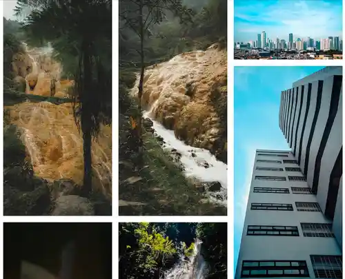

Rafli Raihan \ Portfolio
Blog
About Me
Home
Projects

Unsplash Stock Photos
Collection of free to use stock image on unsplash.com
Experiences
Computer Repair Techinician | Cahaya Computer
2023 - 2024
Repaired, upgraded and maintained personal computer (pc) and laptop devices
Successfully built custom personal computers (pc) for offices and gaming purposes
Successfully deployed OSes (e.g. Windows & Linux), installed softwares and drivers on personal computer (pc) and laptop devices
High School Student | SMA Negeri 82 Jakarta
2019 - 2022
Participated in Teenage Scientific Works (Karya Ilmiah Remaja) in electronics division
Wrote scientific papers in Microsoft Word, designed presentations in Microsoft Powerpoint and presented it
Participated in music extraculicular